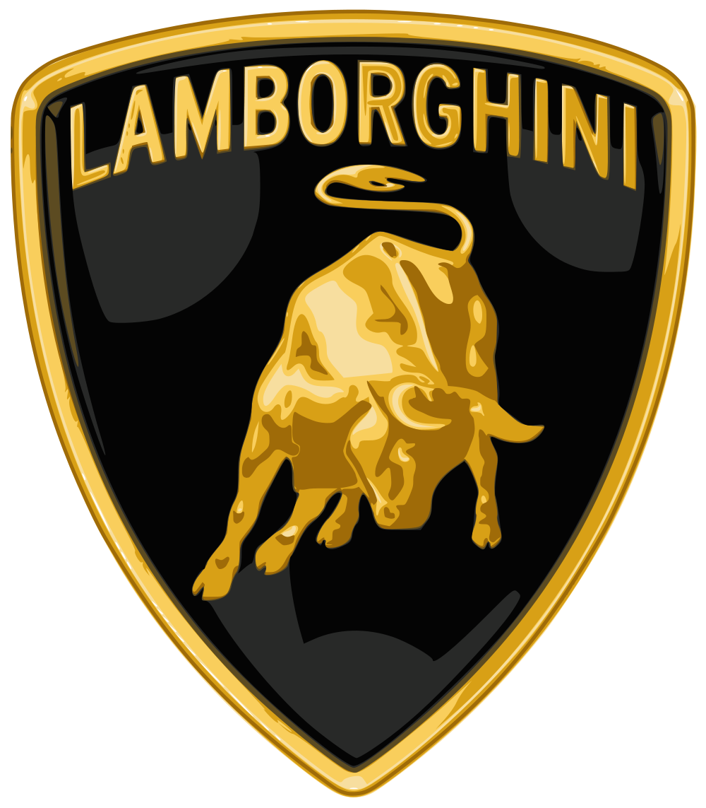

|  |
Lamborghini urus |
The Urus Pearl Capsule is a variant of the standard Urus. Customers who buy the Urus Pearl Capsule are able to customize it to the fullest, with options including being able to choose the colors for two-tone Alcantara seats, to the paint colors. Lamborghini states that there are three pearl paint options available —Verde Mantis, Arancio Borealis and Giallo Inti —providing a modern interpretation of the original solid colors united with Lamborghini tradition. The Black Gloss is painted lower bumpers, rocker covers and roof to create a dramatic two-tone effect, while the 23-inch Taigete alloy wheels in Shiny Black match the color accents chosen. Technical specifications of the Urus Pearl Capsule such as power and torque remain the same as the standard Urus.[13]
The Lamborghini Urus does not use Lamborghini's hallmark of naturally aspirated V10 (as used in the concept) or V12 engines. Instead, the Urus is powered by a 650 PS (641 hp; 478 kW) 4.0 L twin-turbocharged V8, a modified version of Audi's 4.0 L V8.[7][8] This engine has application in other VW Group cars, including both the Porsche Cayenne and Panamera, as well as some of the Audi S and RS models,[citation needed] the A8, the Bentley Continental V8[citation needed] and the Flying Spur V8. The engine has been heavily reworked for the Urus, and is uprated by 100 PS (74 kW; 99 hp) and 80 N⋅m (59 lbf⋅ft) of torque more than the Cayenne Turbo, with changes such as new cylinder heads. The engine is assembled at a Volkswagen plant in Hungary and is shipped to Lamborghini's assembly plant.